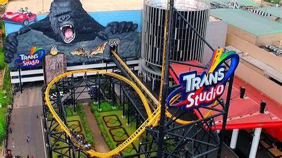
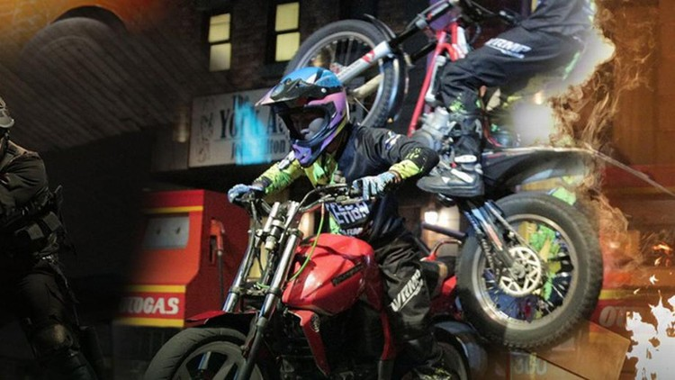
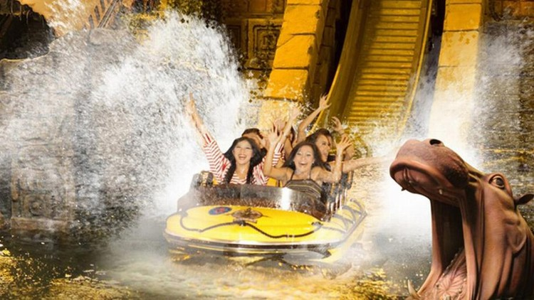

Tentang Trans Studio Bandung
Trans Studio Bandung adalah Unit Bisnis Hiburan terlengkap dari CT Corpora, Trans Studio memiliki konsep rekreasi keluarga berupa indoor theme park yang menghadirkan area permainan bertema di dalam ruangan dengan wahana permainan kelas dunia seperti roller coaster dengan manuver mundur di Trans Studio Bandung ataupun roller coaster yang berada di atas gedung di Trans Studio Cibubur dan Trans Studio Bali. Di mulai pada 2011, Trans Studio Bandung terus berekspansi dengan pembukaan Trans Studio Cibubur dan Trans Studio Bali. Selain menghadirkan wahana kelas dunia, pengunjung juga dapat menikmati atraksi berupa show spektakuler yang dapat dinikmati di Trans Studio.
Arena Zona Trans
Magic Corner
Keajaiban bermula dari sini. Sentuhan spesial yang akan mempesonakan perjalanan anda. Suasana magic akan menyihir anda seketika dan membuat anda begitu yakin pada apa yang ada di depan mata. Pengunjung akan hanyut dalam sensasi yang ditimbulkan oleh dunia penuh keajaiban. Di sini juga tersedia fasilitas pendukung seperti ruang perawatan atau klinik. Beberapa photo spot yang jangan sampai Anda lewatkan, dan banyak pula makanan favorit yang tersedia. Atau untuk Anda yang ingin membawa buah tangan untuk keluarga dan teman-teman bisa langsung saja menuju ke Trans Studio Store
Lost City
Membawa mimpi anda menjadi kenyataan. Hollywood Here I Come! Satu kawasan spektakuler yang dikemas dalam tampilan ala Hollywood era 60-an. Anda seolah melangkah di pusat negeri hiburan. Di sini tersedia wahana ekstreem yang selalu menjadi favorit semua orang dan juga dunia untuk anak-anak. Selain itu terdapat pula fasilitas pendukung seperti Mushola, kamar kecil, kamar kecil penyandang cacat dan information center. Petugas Costumer Service kami selalu siap siaga untuk membantu anda dalam menikmati petualangan anda dan menjadikan nya sempurna. Tonton pertunjukan luar biasa bertaraf internasional di Trans City Theater dan Amphitheatre, atau berbelanja aneka permen lucu di candy store dan merchandise eksklusif di Trans Studio Store. Jangan lupa mengabadikan momen indah kamu bersama teman-teman dan keluarga yang dapat diambil di Digi Photo.

Studio Central
Persiapkan diri Anda untuk petualangan yang luar biasa! Anda akan mengalami perjalanan yang menakjubkan. Sebuah ekspedisi bertemakan hutan Amazon yang akan menjadi bagian dari petualangan Anda untuk menjelajahi Kota Yang Hilang! Petualangan dimulai sekarang! Bergabunglah dengan petualangan sejati, hadapi tantangan Anda di sini yang memberi Anda pengalaman yang tak terlupakan. Di sini juga tersedia fasilitas pendukung seperti kamar kecil, kamar kecil penyandang cacat, dan beberapa lokasi photo spot untuk kamu yang datang bersama rombongan teman-teman dan keluarga. Makanan lezat ataupun aneka cemilan juga siap untuk menyempurnakan keseruan harimu. Merchandise keren telah menantimu di Trans Studio Store untuk dibawa pulang.
Wahana Zona Trans
Kini Trans Studio Bandung, menyediakan berbagai wahana yang dapat kalian kunjungi dan mainkan keseruannya bersama keluarga pilihan. Wahana yang tersedia yaitu Racing Coaster, Giant Swing, Dunia Lain, Vertigo, Jelajah, Super Heroes 4D, dan masih banyak lagi.
Roller Coaster tercepat di dunia dengan manuver mundur yang sensasional.
Roller Coaster ini melaju menuju ketinggian 50 meter dengan akselerasi kecepatan hingga 120 km/jam dalam 3,5 detik dan mundur dengan kecepatan sama sampai kemudian berhenti ditempat semula.
Anda dijamin akan tetap histeris, bayangkan melaju sekencang itu di atas jalur yang berketinggian 50 meter. Sudut kemiringan tertajam Racing Coaster mencapai 90 derajat.
Uji Adrenalin Anda disini, terpacu dan saatnya Anda untuk teriak bebas.
Kategori: Wahana Extreme
Ketentuan:Tinggi badan minimal 135 cm, tidak memiliki riwayat penyakit jantung.
Wahana yang selalu menjadi pembicaraan semua orang, sebuah ayunan berputar raksasa di dalam ruangan pertama di Indonesia. Menyenangkan dan menegangkan! Sudahkah Anda siap diayun dengan ayunan berputar raksasa? Giant Swing, Let's SWING!!
Kategori: Wahana Extreme
Ketentuan: Tinggi badan minimal 130 cm
Siapkan diri Anda untuk menguak misteri legenda Bandung yang mencekam. Anda akan melalui perjalanan dengan suasana yang mendebarkan! Berbagai tempat-tempat melegenda di kota Bandung akan menguji nyali Anda!
Kategori: Wahana Keluarga
Ketentuan: Wahana ini untuk semua usia, khusus anak-anak harus didampingi orang dewasa
Kincir raksasa pertama di dalam ruangan, nikmati sensasi berputar 360 derajat di ketinggian.
Begitu permainan dimulai, wahana vertigo akan membawamu naik ke ketinggian 20 meter. Jangan sepelekan ketinggiannya yang tampak tak seberapa, ya! Begitu sampai ketinggian maksimal wahana akan mulai berputar-putar dengan kecepatan tinggi.
Dinamai vertigo karena wahana ini akan melakukan putaran 360 derajat yang mungkin akan membuat kamu merasa pusing. Putarannya yang kencang juga pasti akan membuat kamu kesulitan menahan diri untuk tidak berteriak. Cocok sekali untuk memacu adrenalin dan melepaskan semua beban!
Wahana vertigo berlangsung selama kurang lebih 3 menit. Tapi percayalah durasi singkat tersebut sudah lebih cukup untuk membuat kamu merasa tegang sekaligus terhibur.
Kategori: Wahana Extreme
Ketentuan: Tinggi badan minimal 130 cm
Mengarungi ganasnya rimba Afrika untuk sebuah misi penyelamatan. Siapkan diri Anda untuk jatuh dari air terjun dengan ketinggian 13 meter, sebuah petualangan yang nyata.
Jiwa pemberani? Coba taklukan wahana yang satu ini.
Jangan takut kebasahan, karena Anda bias membeli jas ujan atau pakai mesin pengering berbayar setelah naik wahana yang satu ini.
Kategori: Wahana Extreme
Ketentuan: Tinggi minimal 120 cm
Untuk Anak Kecil harus didampingi orang dewasa
Simulator 4D pertama di dunia yang menampilkan tokoh Marvel kesayanganu, seperti Spiderman, Hulk, Wolverine dan Captain America. Mengkombinasikan keajaiban multimedia dan special effect yang akan membuat petualangan menyelamatkan Jakarta, India & Amerika menjadi terasa semakin nyata.
Ajak keluarga Anda untuk menikmati wahana yang satu ini, dan rasakan sensasinya secara langsung.
Kategori: Wahana Keluarga
Ketentuan: Tinggi badan minimal 100 Cm